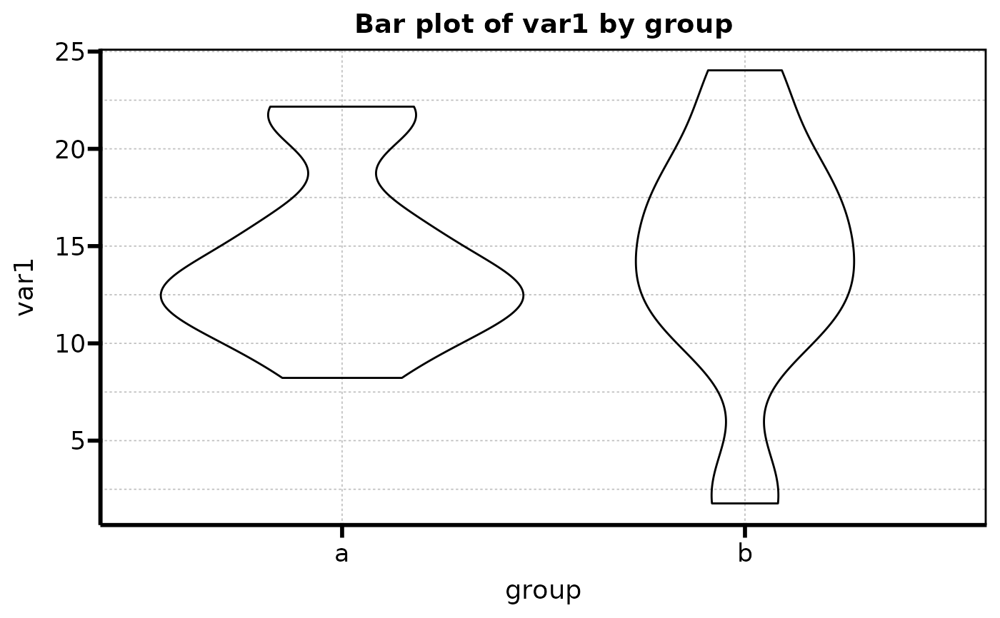
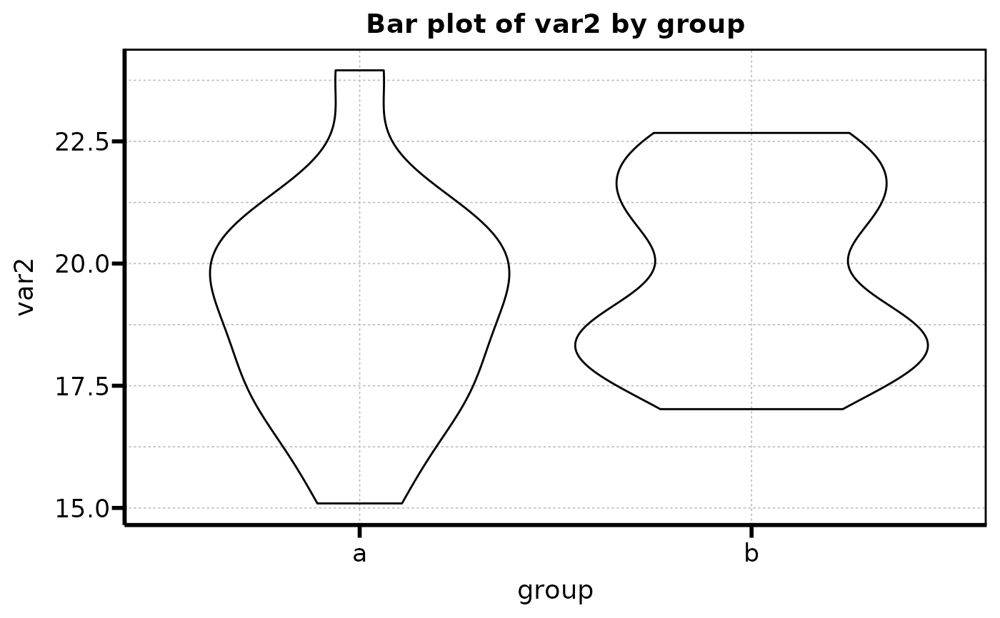
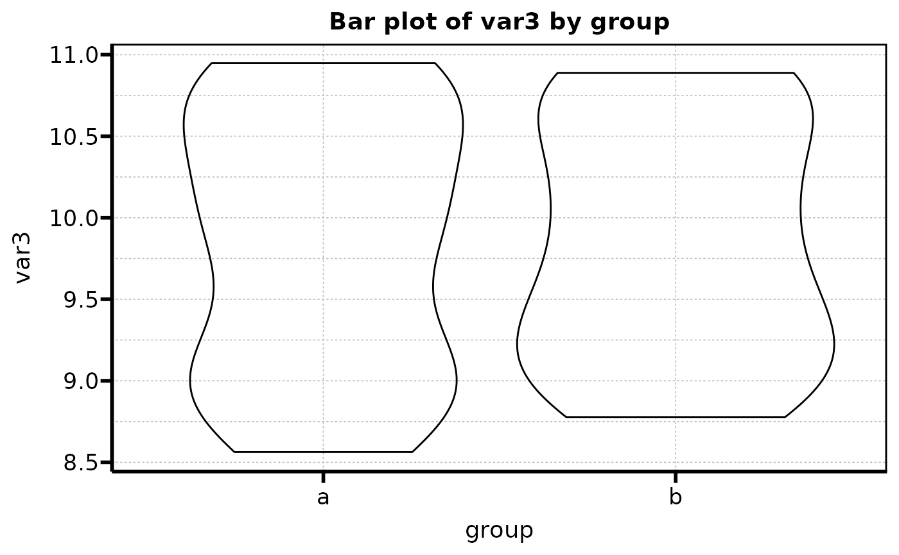
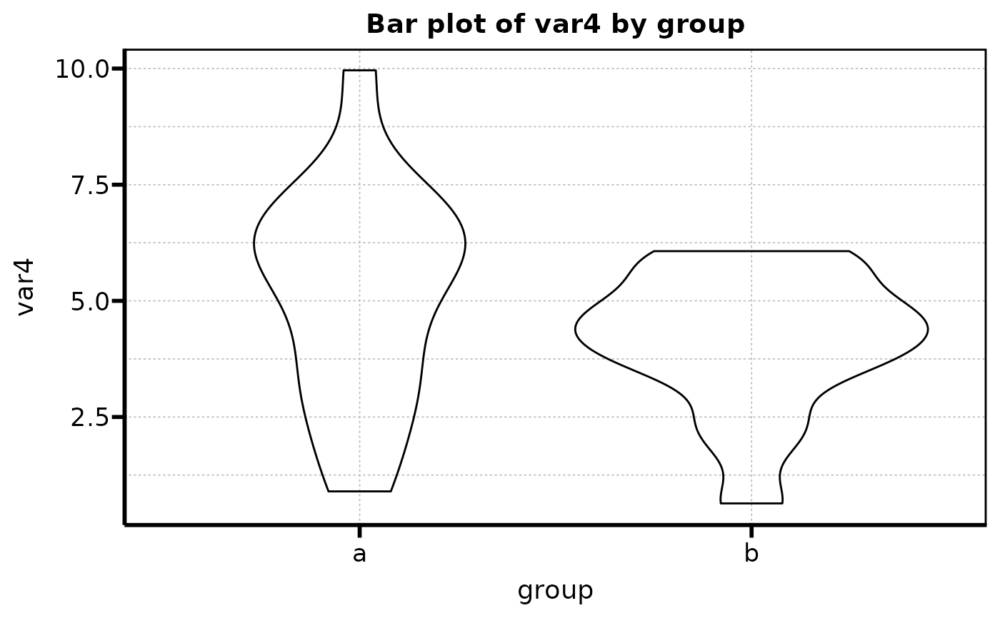

Automatically generates violinplots of continuous variables from a database and a grouping variable. The names of the variables are set to the names defined in the database. As a result, graphs generated with the default theme "theme_serene" will be obtained. In this function it is not possible to use labels for the variables, use "auto_viol_cont_wlabels" instead.
Value
Returns a list containing barplots as ggplot2 objects. Objects can be accessed via $ operator.
Examples
data <- data.frame(group = rep(letters[1:2], 30),
var1 = rnorm(30, mean = 15, sd = 5),
var2 = rnorm(30, mean = 20, sd = 2),
var3 = rnorm(30, mean = 10, sd = 1),
var4 = rnorm(30, mean = 5, sd =2))
data$group<-as.factor(data$group)
# Create a list containing all the plots
violinplots<-auto_viol_cont(data = data, groupvar = 'group', lang_labs = 'EN')
# call to show all storaged plots
violinplots
#> $var1

#>
#> $var2

#>
#> $var3

#>
#> $var4

#>
# call to show one individual plots
violinplots$var1